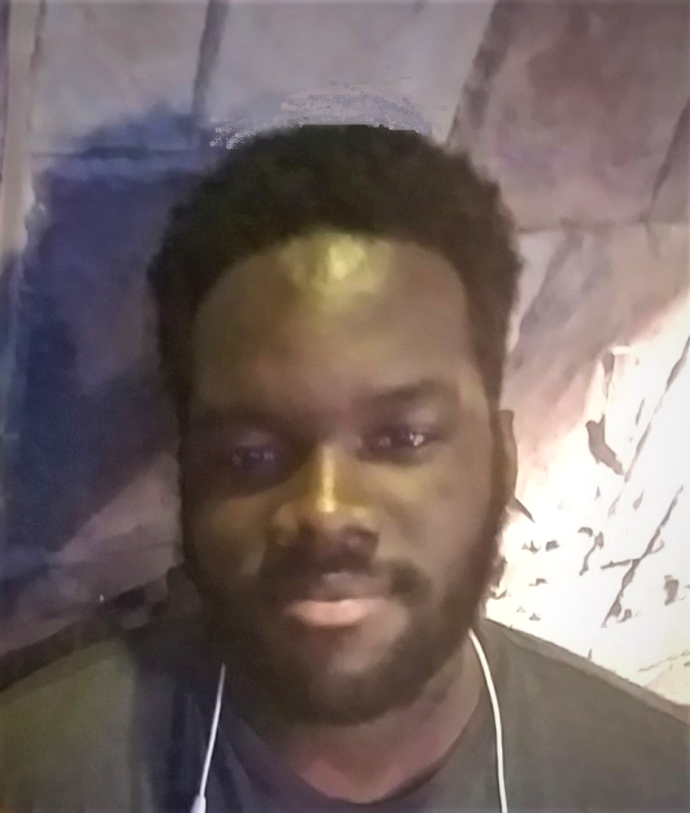

About me
My name is Jamal Joseph. I am a software developer with a bachelors in computer science. I am skilled in several languages such as C++, C#, AngularJs, Angular 8 and Pyhton. I work in several developer environments such as:
- Unity
- Unreal engine 4
- Visual Studio
- Visual Studio Code
- Sublime Text 3
Hobbies
I am an avid musician. I play the guitar and steel pan. I also like to draw both traditional and digitally. I love martial arts and would like to learn new ones like Muay Thai, Kickboxing and more conventional fighting styles like Krav Maga
Other things I would like to do are, write stories, make small games especially a platformer and fighting, learn the saxaphone, learn to mod video games, learn to mod arcade sticks, get good at drawing, stream and make Youtube videos, read more, exercise more and look into new things to learn and do.
Accomplishments
Here are some things I have done in my life:
- Graduated from Midwestern State University with a Bacherlors degree in Computer Science
- Webteam chair/Co-Chair for the Caribbean Students Organisation for 3 years
- Co-manager for the Caribbean Steel Pan Ensemble for 1 year
- Attained my black belt in shotokan karate at the age of 14
- Leader of the Ebenezer Methodist Youth Fellowship for 2 years
- Competed in the interschool Junior Science Quiz for 2 years
- Placed first in the Medical benefits 5k walk/run in the 16 - 18 year division
- Worked on a 1 episode show for Abs